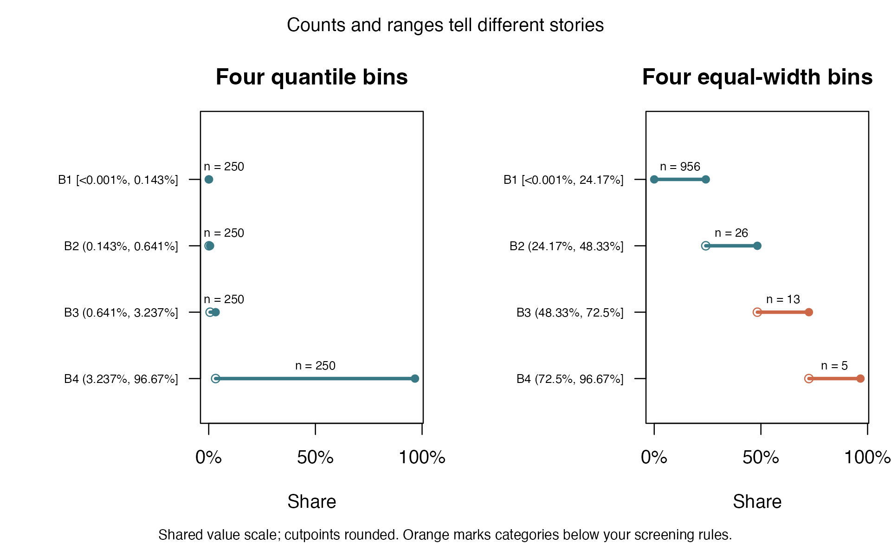
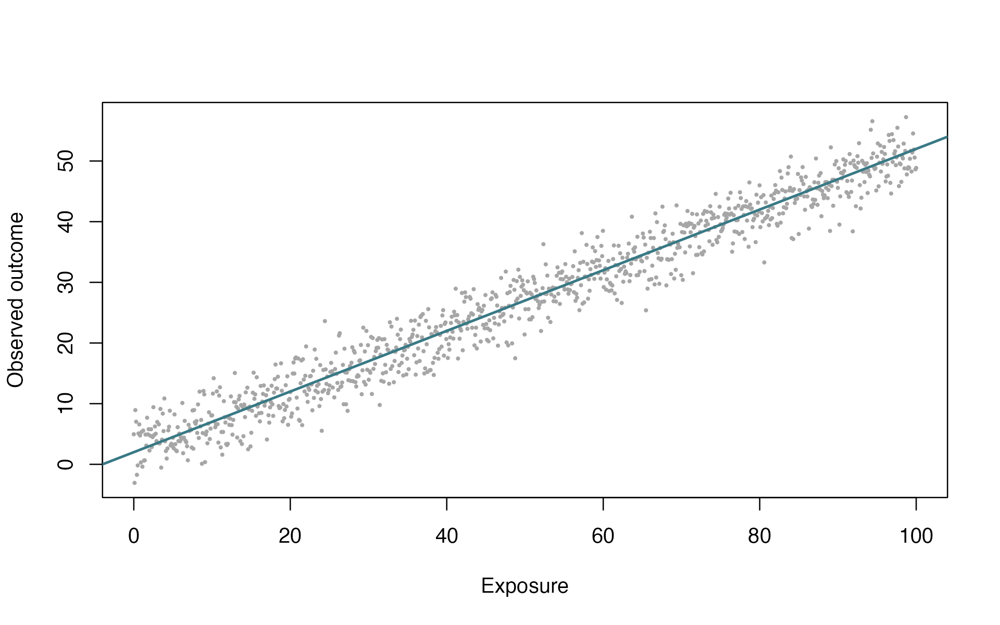
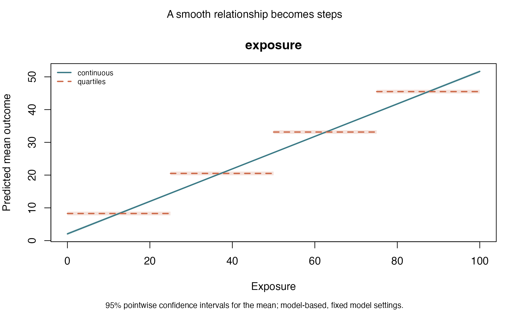
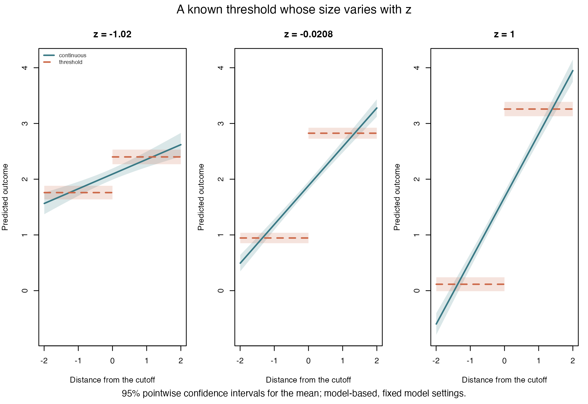
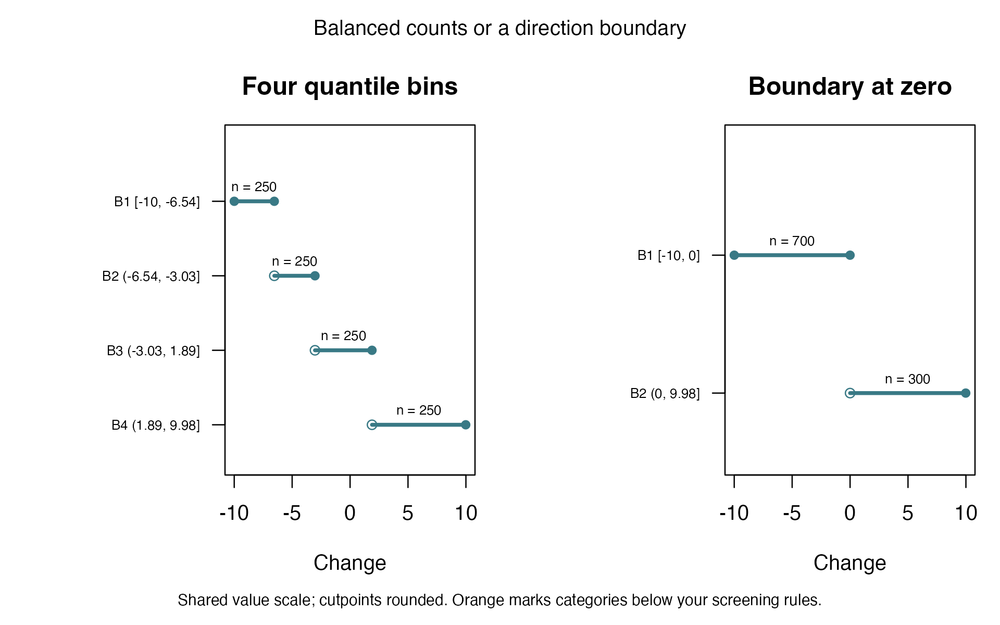

Getting started with binwise
Keith A. Preble
Source:vignettes/getting-started.Rmd
getting-started.RmdWhat you will learn
Binning means replacing a numeric measurement with a category. For example, instead of keeping someone’s exact participation score, you might record “no participation”, “lower participation”, or “higher participation”. That can make a distinction easier to communicate. It also discards differences between people placed in the same group.
binwise helps you examine that trade-off. It does not
issue a universal verdict that a variable should be binned. Start with
your question, inspect what the categories would contain, and check the
consequences for the analysis you want to do.
This tutorial uses six small simulated datasets included with the package. Simulation lets us know the underlying rule in two examples. Real data rarely give us that advantage. Nothing here needs the author’s paper, a downloaded file, or objects left over from another R session.
Suggested pace. Work through sections 1 to 4 first, then take a break. Sections 5 and 6 compare predictions. Sections 7 and 8 cover negative values and changes across zero. You can stop after any complete section and return later by rerunning the earlier code.
| Function | The question it helps answer |
|---|---|
bin_diagnose() |
What values and observation counts would these bins contain? |
bin_compare() |
How do different sets of bins group the same observations? |
bin_apply() |
How do I add my chosen categories to my data? |
bin_interact() |
How do fitted relationships change when I use categories? |
bin_validate() |
How well do the competing models predict held-out observations? |
1. Start a clean RStudio session
A package is a collection of reusable functions, documentation, and sometimes datasets. Installing a package puts those files on your computer. Loading it makes its functions available in the current R session.
This development draft must already be installed from the supplied
package archive or project instructions. It is not currently available
through install.packages("binwise"). Once installed in an
active library, run this in RStudio’s Console.
If you use the local development project, open
binwise.Rproj and run source("tools/start.R")
instead. That project helper locates the local installation and loads
it. The rest of this guide is the same for everyone. You can reopen the
installed guide with
vignette("getting-started", package = "binwise").
For a comfortable way to work, choose File > New File > R Script, copy one code block into the script, select it, and press Command+Enter on a Mac or Ctrl+Enter on Windows. Run the blocks in order. Results appear in the Console; figures appear in Plots, where Zoom makes them larger. Save your script so you have a record of your steps. You do not need to click Knit to follow this guide.
A few pieces of R notation will help.
| Notation | Meaning |
|---|---|
result <- ... |
Run the expression and save its result under the name
result. |
"score" |
A column name supplied as text. Keep the quotation marks. |
result$bins |
Open the component named bins inside a
saved result. |
# a comment |
An explanation that R ignores. |
TRUE and FALSE
|
Turn an option on or off. Capitalization matters. |
NA |
A missing value, not the number zero. |
Copy code from the code blocks, not the printed output beneath them.
Output lines beginning with #> are shown to help you
compare your results. A successful assignment often prints nothing. Type
the saved object’s name to inspect it.
2. When zero means something different
Imagine a participation score. Zero means that someone did not participate; a positive number measures how much they participated. That distinction comes from the meaning of the variable, not from the shape of a histogram.
First, load the example and look at its first six rows. A data frame is a table with observations in rows and variables in columns.
data("binwise_zero", package = "binwise")
head(binwise_zero)
#> id score
#> 1 1 0.1852
#> 2 2 0.2625
#> 3 3 0.2648
#> 4 4 0.0914
#> 5 5 0.3782
#> 6 6 0.0000
nrow(binwise_zero)
#> [1] 1000
sum(binwise_zero$score == 0)
#> [1] 400You should see 1,000 rows and 400 exact zeros. id
identifies an observation; score is the variable we want to
inspect. == 0 checks which scores equal zero, and
sum() counts those matches here.
Now ask for three intervals among positive scores and a separate zero category.
zero_scheme <- bin_diagnose(
binwise_zero, "score", bins = 3,
separate_zero = TRUE, warn = FALSE
)
zero_scheme
#> binwise diagnosis of score
#>
#> Assessment
#> * Exact zeros account for 40.00% of finite observations. They are kept in a separate category; interval bins describe positive values.
#> * The largest interval, B1, contains 200 observations (33.33% of observations assigned to intervals). Compare this balance with your intended use of the categories.
#> * The widest observed within-bin range is in B3, from 0.344 to 0.835 (58.80% of the full observed range). If distinctions within that range matter, consider additional or custom boundaries there.
#>
#> 1000 finite observations out of 1000 rows
#> 0 missing; 0 infinite; 601 unique finite values
#> 400 exact zeros ( 40 % of finite values)
#> min median mean max sd skewness
#> 0 0.1295 0.1715 0.8349 0.1856 0.8255
#>
#> Percentiles
#> probability value
#> 0.00 0.0000
#> 0.01 0.0000
#> 0.05 0.0000
#> 0.10 0.0000
#> 0.25 0.0000
#> 0.50 0.1295
#> 0.75 0.3025
#> 0.90 0.4476
#> 0.95 0.5206
#> 0.99 0.6463
#> 1.00 0.8349
#>
#> Candidate bins using quantile
#> Requested 3 interval bins; created 3 interval bins and 1 zero category
#> bin lower upper n proportion sparse
#> Zero 0.000000 0.0000 400 0.4 FALSE
#> B1 0.004407 0.1967 200 0.2 FALSE
#> B2 0.196675 0.3431 200 0.2 FALSE
#> B3 0.343090 0.8349 200 0.2 FALSE
#> Intervals include the upper boundary; the first also includes the lower boundary.
#> Exact zeros are assigned separately before applying intervals.
#>
#> Notes
#> * Interval boundaries use positive values only. The zero category is additional to the requested interval bins.
#>
#> These diagnostics describe the supplied data and candidate boundaries.The saved result contains both tables and a plain-language
assessment. Here, warn = FALSE keeps advisory messages in
the report instead of repeating them as R warnings. It does not make
invalid inputs acceptable.
Look more closely at just the boundaries and counts.
zero_scheme$bins[, c("bin", "lower", "upper", "n", "proportion")]
#> bin lower upper n proportion
#> 1 Zero 0.000000 0.0000 400 0.4
#> 2 B1 0.004407 0.1967 200 0.2
#> 3 B2 0.196675 0.3431 200 0.2
#> 4 B3 0.343090 0.8349 200 0.2n is the number of observations in a category.
proportion is its share of usable observations, so
0.4 means 40%. lower and upper
describe interval boundaries. There are four
categories, because bins = 3 requests three
positive intervals in addition to the zero category. The counts are 400,
200, 200, and 200.
What should you conclude? Keeping nonparticipation separate makes sense for this fictional question. There is no reason yet to conclude that the positive scores also need three categories. You could instead use a zero indicator and retain positive intensity as a continuous measurement. Describing a meaningful zero is a different decision from categorizing every positive value.
The automatic zero option currently requires nonnegative values. Section 8 shows how to handle a boundary at zero when negative values also occur.
3. Create a categorical variable while keeping the original
A scheme is a saved set of boundaries and assignment
rules. Once you choose one, bin_apply() uses those same
rules to create a factor, R’s representation of a
categorical variable.
participation <- bin_apply(
binwise_zero, zero_scheme, name = "participation_group"
)
head(participation)
#> id score participation_group
#> 1 1 0.1852 B1
#> 2 2 0.2625 B2
#> 3 3 0.2648 B2
#> 4 4 0.0914 B1
#> 5 5 0.3782 B3
#> 6 6 0.0000 Zero
table(participation$participation_group)
#>
#> Zero B1 B2 B3
#> 400 200 200 200
is.factor(participation$participation_group)
#> [1] TRUEparticipation is a new data frame. It contains the
original score column and the new
participation_group column. The last line prints
TRUE. You have now created a variable you can use in tables
or models. You have not changed the original binwise_zero
dataset.
The factor is not the same as assigning the numbers 1, 2, 3, and 4 and treating them as a numeric measurement. A model using a factor can estimate separate category differences without assuming equal distances between categories.
Saved schemes are also useful for applying consistent definitions to
new data. Values beyond a scheme’s saved finite range produce an error
by default. out_of_range = "NA" explicitly marks those
values missing instead. Investigate such values rather than silently
dropping them. For prediction evaluation, use the training-only recipes
shown in section 6.
4. When balanced counts hide a long upper tail
A quantile scheme aims for similar numbers of observations in each bin. Four quantile bins are commonly called quartiles. An equal-width scheme divides the numeric range into equally wide intervals. These are different objectives, and neither guarantees useful categories.
data("binwise_tail", package = "binwise")
tail_comparison <- bin_compare(binwise_tail, "share", bins = 4)
plot(
tail_comparison, type = "boundaries", show_counts = TRUE,
value_format = "percent", xlab = "Share", main = "Counts and ranges tell different stories",
scheme_labels = c(quantile_4 = "Four quantile bins",
equal_width_4 = "Four equal-width bins")
)
The variable is stored as a fraction between 0 and 1. Percentage
formatting makes 0.01 appear as 1%; it does not change the
data or boundaries. For variables already stored from 0 to 100, use
percent_scale = 1. For income, temperature, or other
measurements, leave out percentage formatting.
Read the picture in two passes. First, examine each
horizontal interval. A long interval means that very different numeric
values are assigned to the same category. Second, read n
beside each interval. That is its observation count. A narrow interval
can contain many observations; a wide interval can contain very few.
Open and filled endpoints show excluded and included bounds. By default,
intervals include their upper endpoint and the first interval also
includes its lower endpoint. Displayed cutpoints are rounded; saved
boundaries retain their precision.
Orange marks indicate categories below the chosen screening thresholds. The defaults are 20 observations or 1% of usable observations. These are prompts to inspect support, not universal rules for statistical adequacy. Row counts are not necessarily counts of independent people or countries.
For the numerical detail, run this.
tail_comparison$bins[, c("scheme", "bin", "lower", "upper", "n")]
#> scheme bin lower upper n
#> 1 quantile_4 B1 5.160e-06 0.001432 250
#> 2 quantile_4 B2 1.432e-03 0.006412 250
#> 3 quantile_4 B3 6.412e-03 0.032369 250
#> 4 quantile_4 B4 3.237e-02 0.966646 250
#> 5 equal_width_4 B1 5.160e-06 0.241665 956
#> 6 equal_width_4 B2 2.417e-01 0.483325 26
#> 7 equal_width_4 B3 4.833e-01 0.724986 13
#> 8 equal_width_4 B4 7.250e-01 0.966646 5What should you conclude? The upper quantile bin covers a broad range, while equal-width bins put most observations in the lowest interval. This identifies what each choice hides. Skewness alone does not establish that binning will improve an outcome model. A transformed or flexible continuous predictor may retain useful information.
You can supply your own thresholds. The following 1%, 5%, and 20% boundaries are illustrative, not recommendations for every proportion.
tail_custom <- bin_compare(
binwise_tail, "share", methods = "quantile",
custom_breaks = list(chosen_thresholds = c(0, .01, .05, .20, 1))
)
tail_custom$bins[, c("scheme", "bin", "lower", "upper", "n")]
#> scheme bin lower upper n
#> 1 quantile_4 B1 5.160e-06 0.001432 250
#> 2 quantile_4 B2 1.432e-03 0.006412 250
#> 3 quantile_4 B3 6.412e-03 0.032369 250
#> 4 quantile_4 B4 3.237e-02 0.966646 250
#> 5 chosen_thresholds B1 0.000e+00 0.010000 572
#> 6 chosen_thresholds B2 1.000e-02 0.050000 243
#> 7 chosen_thresholds B3 5.000e-02 0.200000 130
#> 8 chosen_thresholds B4 2.000e-01 1.000000 55
share_data <- bin_apply(
binwise_tail, tail_custom$diagnoses$chosen_thresholds, name = "share_group"
)Use thresholds motivated by your question and inspect their counts. A custom scheme is an option you can evaluate, not a claim that those boundaries are true.
5. A case where bins discard a useful relationship
Now add an outcome, the quantity we want to explain or predict. In this simulation, its expected value increases smoothly with exposure. There is no threshold. Random noise makes individual observations scatter around that rule.
data("binwise_smooth", package = "binwise")
plot(binwise_smooth$exposure, binwise_smooth$outcome,
pch = 16, cex = .45, col = "grey65",
xlab = "Exposure", ylab = "Observed outcome")
abline(a = 2, b = .5, col = "#397985", lwd = 2)
The line shows the known simulated mean,
2 + 0.5 * exposure. An additional 10 units of exposure
raises that mean by 5 units. The dataset also stores this rule in
expected_outcome. That column is a teaching aid, not an
extra control to put in a model of the noisy outcome.
Compare a continuous linear predictor with four quantile categories.
smooth_scheme <- bin_diagnose(binwise_smooth, "exposure", bins = 4, warn = FALSE)
smooth_fit <- bin_interact(
binwise_smooth, outcome = "outcome", variables = "exposure",
schemes = list(quartiles = smooth_scheme)
)
plot(smooth_fit, xlab = "Exposure", ylab = "Predicted mean outcome",
main = "A smooth relationship becomes steps")
Despite its name, bin_interact() also works with just
one predictor. With a single variable, it fits no interaction. The
continuous model is included automatically. The model named
quartiles replaces exposure with the saved categories.
The continuous line follows a trend. The binned line stays flat within each interval and jumps at its boundary. Those flat sections assume that exposure values in the same bin have the same predicted mean, with other predictors held fixed. They hide changes that matter in this simulation.
The shading shows 95% pointwise confidence intervals for the fitted mean. These are model-based intervals conditional on the chosen cutpoints. They are not intervals containing 95% of individual outcomes, and they do not include uncertainty from choosing the bins. Bands may be too narrow to see clearly. Two bands overlapping, or a step crossing a continuous line, does not show that binning is appropriate or establish that the models are equivalent.
Read the package’s assessment with these lines.
cat(paste(smooth_fit$assessment, collapse = "\n\n"))
#> All models use the same 1000 observations; 0 rows were excluded for missing or nonfinite inputs. This assessment compares your supplied schemes with the continuous benchmark and does not choose bins for you.
#>
#> These models have no interaction. Comparisons concern the representation of the focal predictors with additive controls, if supplied.
#>
#> For the continuous benchmark, moving 'exposure' from 0 to 100 gives a rise of 49.6 outcome units. These are end-to-end predicted changes on the displayed grid, not per-unit effects or causal estimates; controls stay fixed.
#>
#> Scheme 'quartiles'. Compared with continuous, AIC is 860.4 higher; BIC is 870.3 higher; training RMSE is 1.608 higher. The largest absolute prediction difference on the default grid is 6.343 outcome units (exposure = 50; 107 of 107 grid rows comparable). Decide whether that change matters for your application. Its bin groups contain 250 to 250 observations; 0 groups are empty and 0 fall below your count screen (n < 20).
#>
#> Lower AIC or BIC indicates a better fit-complexity tradeoff within this common sample and model family. Lower training error describes these fitted data only. These comparisons are not significance tests or validation on new observations.
#>
#> Binning treats values within a category alike, holding other predictors fixed. Consider it when the boundaries have a defensible meaning and the lost within-bin distinctions are acceptable. Lower AIC alone cannot establish a real threshold. A smooth nonlinear alternative may improve on the linear-term reference; any supplied spline is one such alternative, not every possible continuous model.
#>
#> Prediction differences refer only to the displayed grid with controls fixed, not the whole sample or every possible covariate combination. Group counts describe rows, not independent units, and do not establish joint support for continuous predictors.
#>
#> Confidence bands are pointwise and model-based with fixed model settings, including cutpoints and spline complexity. Their width or overlap does not validate the model shape or test differences between models. Bin selection and clustered dependence are not accounted for. No scheme is selected automatically.This assessment describes the fitted comparison. It does not know the true relationship in your own data. In-sample fit is also different from prediction on observations withheld from fitting.
6. Test predictions, then see a case where bins help
First evaluate the smooth example
Cross-validation separates the data into groups called folds. With five folds, each model fits on four folds and predicts the fifth. Repeating this process gives each eligible observation a prediction from a model that did not fit that observation.
For validation, supply a recipe describing how to
construct bins. Do not supply smooth_scheme, which was
calculated using the whole dataset. The recipe below learns quartile
boundaries separately inside each training sample. probs
lists cumulative proportions from 0 to 1.
smooth_check <- bin_validate(
binwise_smooth, outcome = "outcome", variables = "exposure",
schemes = list(quartiles = list(
exposure = list(probs = c(0, .25, .50, .75, 1))
)),
folds = 5, seed = 12, reps = 199
)
smooth_check$scores
#> model metric score lower upper
#> 1 continuous RMSE 3.011 2.888 3.127
#> 2 quartiles RMSE 4.655 4.468 4.853
#> 3 continuous MAE 2.401 2.292 2.511
#> 4 quartiles MAE 3.840 3.679 4.018
smooth_check$differences
#> model reference metric difference lower upper
#> 1 quartiles continuous RMSE 1.644 1.482 1.829
#> 2 quartiles continuous MAE 1.438 1.284 1.608seed makes the random folds and resampling reproducible.
reps = 199 requests a small number of bootstrap repetitions
for this teaching example. For a final analysis, use more repetitions
and check the stability of the intervals.
Read the scores. RMSE means root mean squared prediction error; it gives larger errors extra weight. MAE means mean absolute prediction error. Both are in the outcome’s units, and lower is better. Here, RMSE is about 3.01 for the continuous model and 4.66 for quartiles. The bins predict worse in this example.
Read the differences. A difference is the candidate score minus the continuous reference score. Positive values favor the reference; negative values favor the candidate. The paired difference compares predictions for the same held-out observations.
Now evaluate a genuine threshold
The next dataset contains two predictors, x and
z, plus a control variable. An interaction
means that the relationship involving x changes with
z. A control is another predictor included
in every candidate model.
For threshold_outcome, the simulation has a real jump at
x = 0. Think of x as distance from a fictional
eligibility cutoff. Within either side, further changes in
x do not change the expected outcome when z
and the control are fixed. This is a feature of the simulated rule, not
a claim about all real eligibility rules.
data("binwise_interaction", package = "binwise")
threshold_scheme <- bin_diagnose(
binwise_interaction, "x", method = "custom",
breaks = c(min(binwise_interaction$x), 0, max(binwise_interaction$x)),
warn = FALSE
)
threshold_fit <- bin_interact(
binwise_interaction, outcome = "threshold_outcome",
variables = c("x", "z"), controls = "control",
schemes = list(threshold = threshold_scheme)
)
plot(threshold_fit, xlab = "Distance from the cutoff",
main = "A known threshold whose size varies with z")
There is one panel for each displayed value of z.
x varies along the horizontal axis, and the control is held
fixed. Only x is binned; z stays continuous.
With two focal variables the interaction is included by default. To
compare additive models instead, set
interaction = FALSE.
At z = 0 and control = 0, the known mean is
1 for x <= 0 and 2.8 for x > 0. A
continuous linear interaction spreads that jump across the range of
x. The threshold model can represent the jump directly.
Now test the threshold without fitting the held-out outcomes.
threshold_check <- bin_validate(
binwise_interaction, outcome = "threshold_outcome",
variables = c("x", "z"), controls = "control",
schemes = list(threshold = list(x = list(breaks = c(-Inf, 0, Inf)))),
folds = 5, seed = 12, reps = 199
)
threshold_check$scores
#> model metric score lower upper
#> 1 continuous RMSE 1.3430 1.2909 1.3981
#> 2 threshold RMSE 1.1981 1.1462 1.2442
#> 3 continuous MAE 1.0669 1.0217 1.1150
#> 4 threshold MAE 0.9537 0.9085 0.9936
plot(threshold_check, metric = "RMSE",
main = "Negative differences favor the threshold model")-Inf and Inf mean there is no finite outer
limit in this validation recipe. The cutoff remains exactly zero. Unlike
learned quantiles, this fixed boundary was specified as part of the
example before examining the outcomes.
Here, RMSE is about 1.34 for the continuous interaction and 1.20 for the threshold model. The bins help for the relationship we deliberately simulated. The plot’s horizontal interval concerns the difference in prediction error, not a fitted outcome curve. These bootstrap intervals hold the folds and fitted predictions fixed; they do not capture every source of uncertainty from refitting or choosing a model.
Why is this a reasonable use of bins? There is a
meaningful, known boundary; the generating mean is constant within each
side at fixed z and control; and the held-out comparison
supports the threshold model over this continuous linear benchmark.
Overlapping fitted lines alone would not supply that evidence. In real
data, subject knowledge supplies the meaning, and validation tests the
predictive consequences. Better prediction does not by itself establish
a causal effect.
Check that the comparison actually used the intended observations
threshold_check$diagnostics
#> fold model training_n test_n unavailable messages
#> continuous 1 continuous 960 240 0
#> threshold 1 threshold 960 240 0
#> continuous1 2 continuous 960 240 0
#> threshold1 2 threshold 960 240 0
#> continuous2 3 continuous 960 240 0
#> threshold2 3 threshold 960 240 0
#> continuous3 4 continuous 960 240 0
#> threshold3 4 threshold 960 240 0
#> continuous4 5 continuous 960 240 0
#> threshold4 5 threshold 960 240 0
threshold_check$fold_scores
#> model metric score lower upper fold n
#> 1 continuous RMSE 1.3965 NA NA 1 240
#> 2 threshold RMSE 1.2397 NA NA 1 240
#> 3 continuous MAE 1.1449 NA NA 1 240
#> 4 threshold MAE 0.9968 NA NA 1 240
#> 5 continuous RMSE 1.3779 NA NA 2 240
#> 6 threshold RMSE 1.1497 NA NA 2 240
#> 7 continuous MAE 1.0890 NA NA 2 240
#> 8 threshold MAE 0.9069 NA NA 2 240
#> 9 continuous RMSE 1.2875 NA NA 3 240
#> 10 threshold RMSE 1.2119 NA NA 3 240
#> 11 continuous MAE 1.0212 NA NA 3 240
#> 12 threshold MAE 0.9720 NA NA 3 240
#> 13 continuous RMSE 1.2596 NA NA 4 240
#> 14 threshold RMSE 1.1513 NA NA 4 240
#> 15 continuous MAE 0.9787 NA NA 4 240
#> 16 threshold MAE 0.9074 NA NA 4 240
#> 17 continuous RMSE 1.3877 NA NA 5 240
#> 18 threshold RMSE 1.2345 NA NA 5 240
#> 19 continuous MAE 1.1008 NA NA 5 240
#> 20 threshold MAE 0.9854 NA NA 5 240unavailable = 0 means that candidate produced a usable
prediction for every test row in that fold. Read messages
if it did not. Scores compare the common usable predictions, so missing
predictions can change the population being scored.
fold_scores shows whether an overall improvement conceals
poor results in some folds.
These simulations use independent rows. For repeated observations of
people, firms, or countries, use an appropriate group
column to keep the same unit out of both training and test sets. The
right grouping depends on the intended prediction task. Standard folds,
including user-supplied fold_id, train on all other folds;
they are not a forward-only forecasting procedure.
The original continuous benchmark is linear regression
or logistic regression with the specified terms. Add
spline_df = 3 to include a flexible continuous comparator
in either bin_interact() or bin_validate(). In
validation, reference = "spline" compares score differences
directly with that spline. The knots are learned from training
observations only. Read the separate guide with
vignette("flexible-continuous", package = "binwise") for a
step-by-step example showing why bins can beat a straight line but lose
to a curve. Advanced users can supply other models through
fit_predict; see ?bin_validate. If you try
many schemes and choose the best on these folds, use a fresh test set or
nested validation to evaluate the chosen procedure honestly.
7. Negative values do not require special bins
This example is an index with an arbitrary origin. Four hundred observations share the value -10. That repeated number has no separate substantive meaning in the fictional setting.
data("binwise_negative", package = "binwise")
negative_scheme <- bin_diagnose(binwise_negative, "score", bins = 4, warn = FALSE)
shifted_scheme <- bin_diagnose(binwise_negative, "shifted_score", bins = 4, warn = FALSE)
negative_scheme$bins[, c("bin", "lower", "upper", "n")]
#> bin lower upper n
#> 1 B1 -10.000 -8.4280 500
#> 2 B2 -8.428 -4.2702 250
#> 3 B3 -4.270 -0.1684 250
identical(negative_scheme$assignments, shifted_scheme$assignments)
#> [1] TRUEYou should see three intervals containing 500, 250, and 250 observations, even though you requested four. The package keeps tied values together; it does not arbitrarily split identical scores to force equal counts.
shifted_score is score + 11, so every
shifted value is positive. The last line prints TRUE:
changing the origin did not change the assignments. Neither negative
signs nor repeated values by themselves justify categories. A repeated
measurement may reflect rounding, a measurement limit, or a real state.
Its meaning needs investigation.
8. A useful boundary can exist even when nobody equals zero
Here, negative values mean declines and positive values mean increases. No observation is exactly zero. If the question is about direction, a boundary at zero is meaningful even though equal-sized groups would be impossible.
data("binwise_mixed", package = "binwise")
direction_comparison <- bin_compare(
binwise_mixed, "change", methods = "quantile",
custom_breaks = list(direction = c(min(binwise_mixed$change), 0,
max(binwise_mixed$change)))
)
plot(direction_comparison, type = "boundaries", show_counts = TRUE,
xlab = "Change", main = "Balanced counts or a direction boundary",
scheme_labels = c(quantile_4 = "Four quantile bins",
direction = "Boundary at zero"))
direction_data <- bin_apply(
binwise_mixed, direction_comparison$diagnoses$direction, name = "direction_group"
)
table(direction_data$direction_group)
#>
#> B1 B2
#> 700 300The direction groups contain 700 declines and 300 increases. The third quantile bin mixes declines with increases. If preserving direction is the purpose, the unequal groups are more faithful to that purpose. If the size of change matters, two groups still throw away useful information.
This is a boundary at zero, not a zero-only category. Intervals include their upper endpoint, so a future exact zero would join the lower interval. Call that interval “nonpositive” if zeros can occur. Do not call it strictly negative without checking the rule.
What to take back to your own data
| Example | A defensible conclusion | What it does not establish |
|---|---|---|
| Meaningful zero | Preserve the distinction between no participation and some participation. | All positive values need bins. |
| Long positive tail | Compare counts with ranges before grouping very different values. | Skewness requires categorization. |
| Smooth outcome | Coarse steps lose a useful within-bin trend here. | Bins are never useful for descriptive tables. |
| Known threshold | Prespecified categories can represent a real jump and predict well. | Every apparent bend in a real plot is a threshold. |
| Negative index | Preserve ties and interpret the scale’s origin. | Negative values need different statistical treatment simply because of their sign. |
| Mixed-sign changes | A zero boundary can preserve direction with unequal counts. | Direction categories preserve magnitude. |
Before choosing bins, write down their purpose, the meaning of the boundaries, and what differences you are willing to hide within a category. Report counts and ranges. Keep the original numeric variable. If prediction matters, evaluate on held-out data with an appropriate continuous alternative. If interpretation or causal inference matters, prediction scores alone cannot resolve the choice.
Common stumbling blocks
| What you see | What to do |
|---|---|
there is no package called 'binwise' |
Follow the supplied archive installation instructions,
or open the local project and run
source("tools/start.R"). |
object ... not found |
Run the earlier block that creates that object,
including the relevant data() call. |
could not find function |
Load binwise again after restarting
R. |
A + prompt instead of
>
|
R is waiting for a closing quote or parenthesis. Press Escape and rerun the complete block. |
| Fewer bins than requested | Check ties and repeated cutpoints in the diagnosis. Equal values stay together. |
| An unreadable plot | Use Plots > Zoom, or enlarge the pane and rerun
plot(). |
| A boundary appears rounded to zero | Inspect $bins with more digits. Display
rounding does not change the stored cutoff. |
| Missing rows in model comparisons | Check missing values in every outcome, predictor, and control, plus validation diagnostics. |
Use ?bin_diagnose, ?bin_apply, or
?bin_validate to open detailed help. For real data and a
short guide to related methods and research, open
vignette("real-data-and-related-work", package = "binwise").